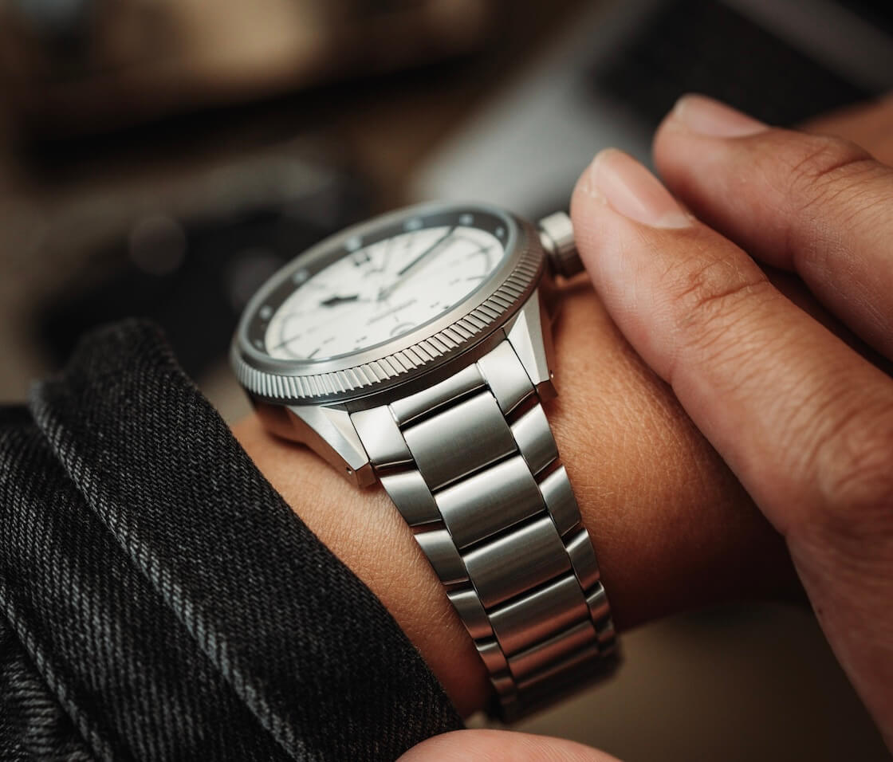
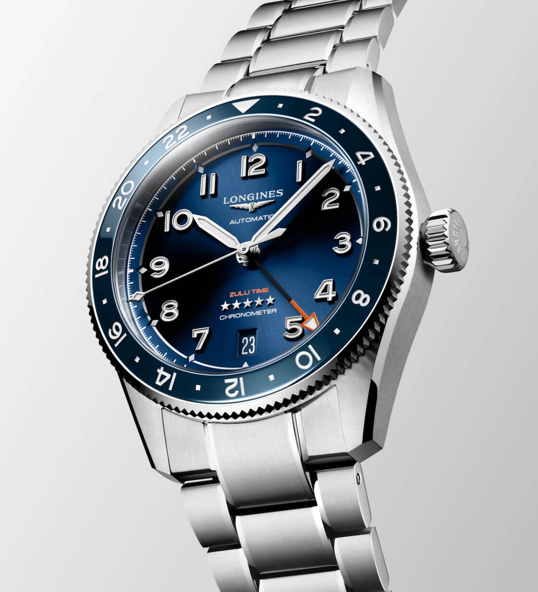
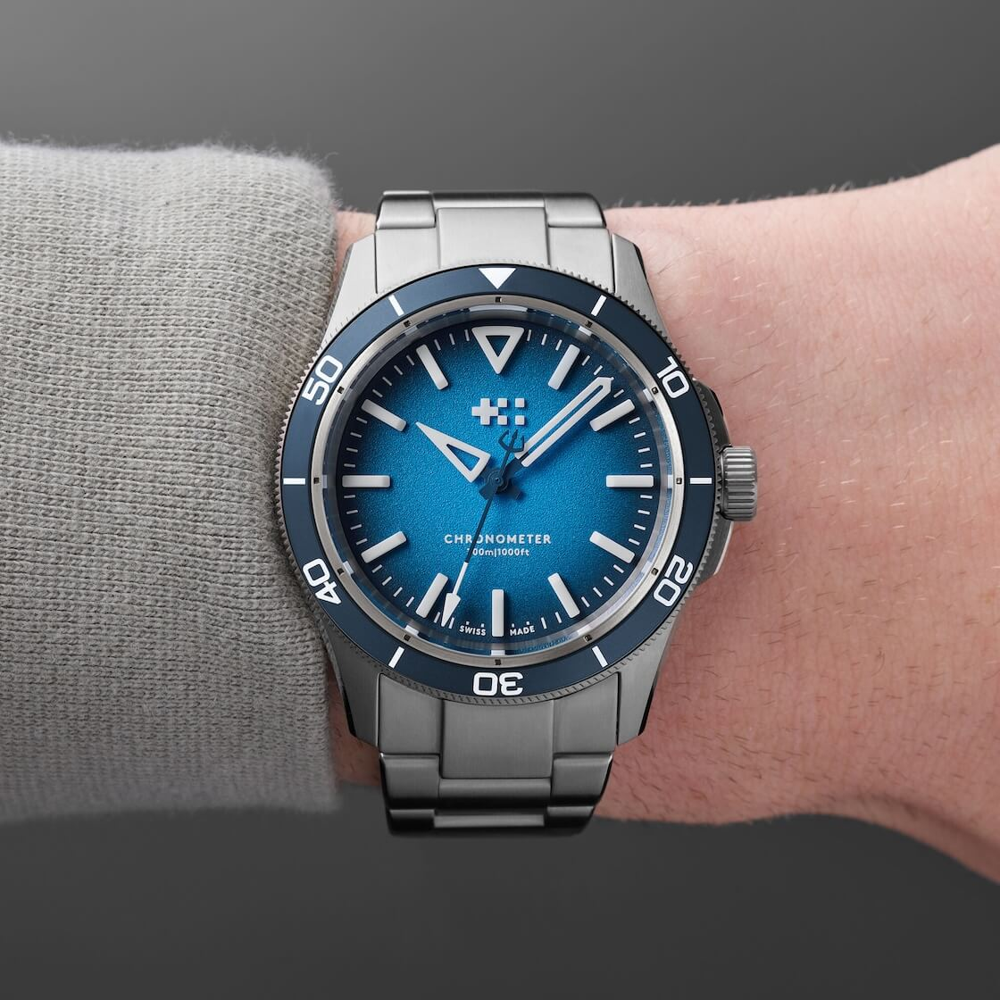
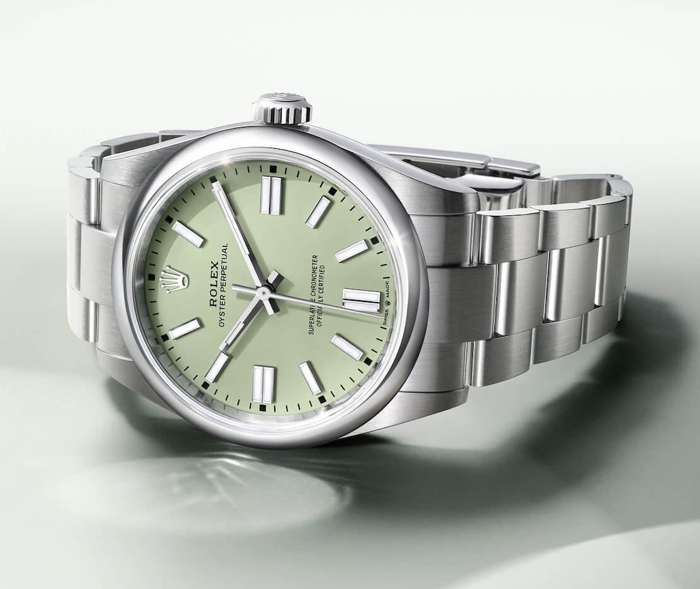
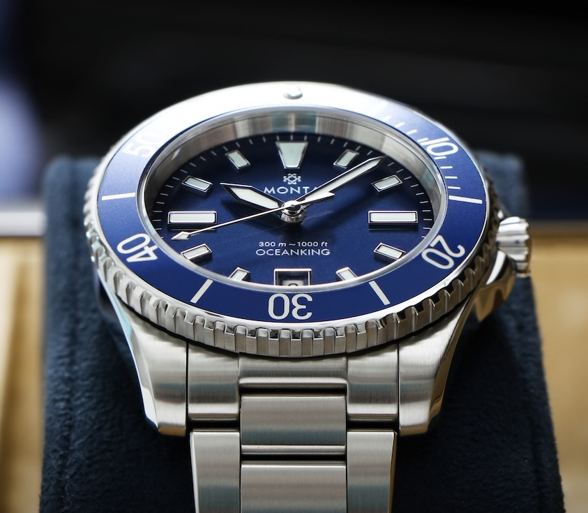
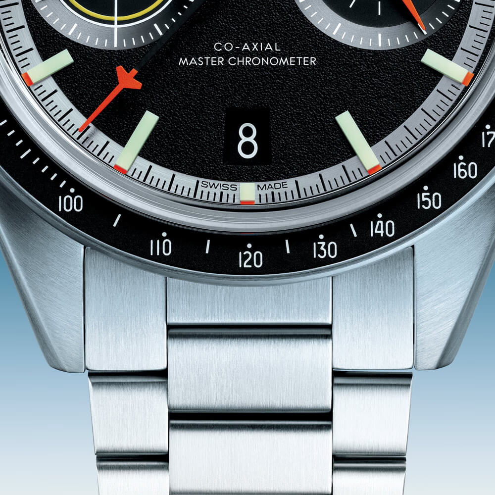
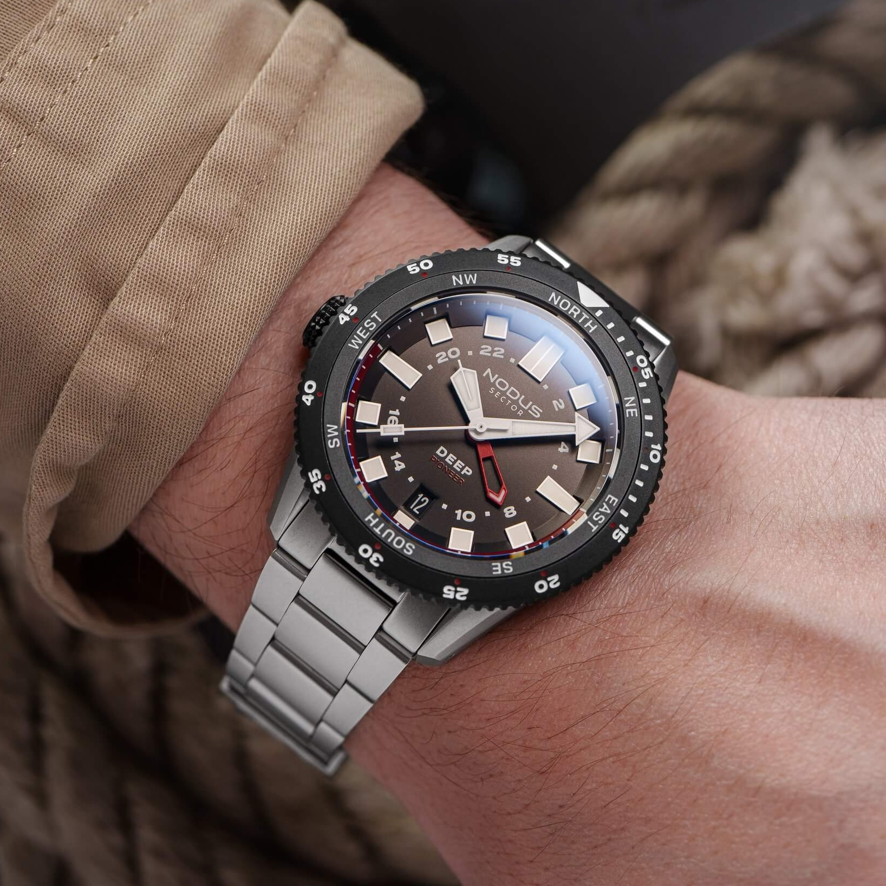
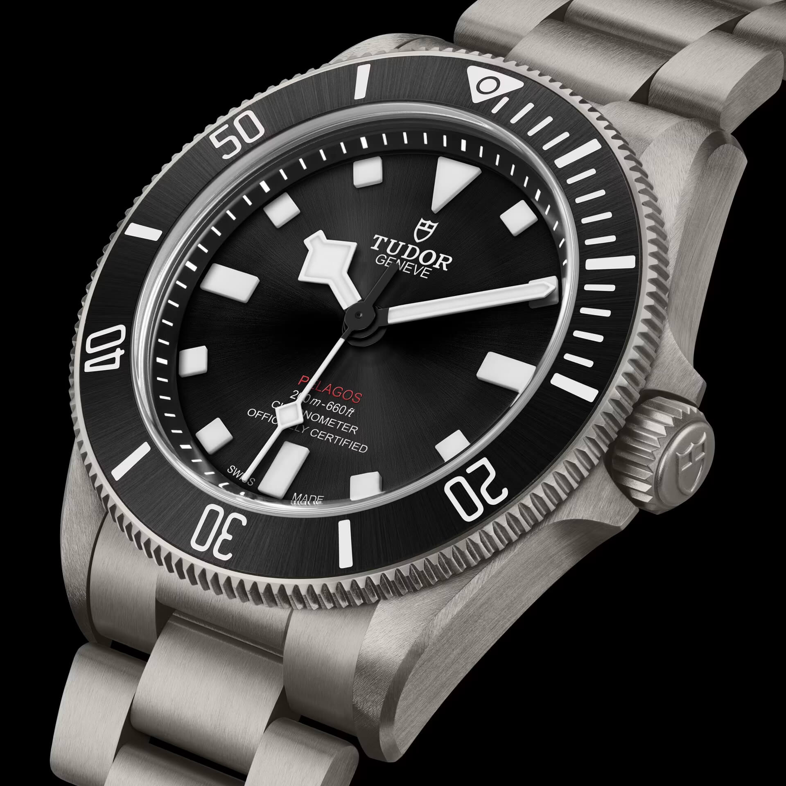
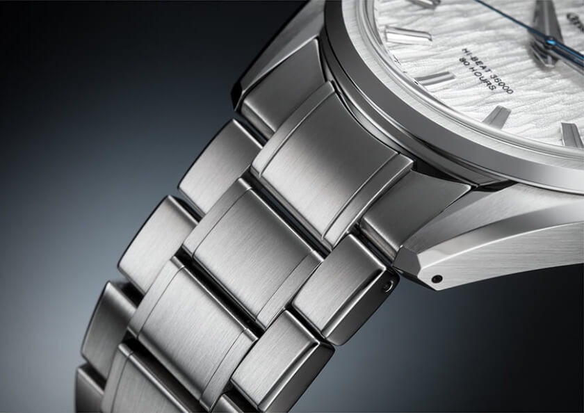

Male vs. Female Endlinks
For watches on metal bracelets, the design of the endlinks, the first component connecting the bracelet to the watch case, is a crucial, often overlooked, micro-ergonomic feature that can dramatically impact fit and comfort.
 Nenad Pantelic • December 21, 2024
Nenad Pantelic • December 21, 2024

Endlinks are the components that connect the bracelet to the case of the watch. They serve as a transitional piece. They need to make sure the bracelet integrates nicely with the watch's case. Endlinks come in two main configurations: male and female. While their primary purpose is to create a secure connection, their design directly influences how a watch adapts to a wearer’s wrist.
What Are Male End Links In Bracelet Design And Construction?
Male endlinks are characterized by a central portion that protrudes outward from the body of the endlink itself, extending beyond the actual tips of the watch lugs to connect with the first true link of the bracelet. Visually, this makes the bracelet appear to begin further away from the watch case.
How Male Endlinks Affect Fit?
It is fair to say that male endlinks effectively extend the overall lug-to-lug length of the watch. Because the point of articulation (where the bracelet begins to pivot downwards) is pushed out beyond the physical lugs, the watch wears significantly larger than case dimensions alone would suggest.
This can be particularly problematic for individuals with smaller or medium-sized wrists, often leading to the bracelet flaring out from the lugs rather than draping closely around the wrist, creating an awkward "shelf" effect or gaps.



What Are Female End Links In Bracelet Design And Construction?
Female endlinks, in contrast, feature a recessed central portion within the endlink. The first link of the bracelet tucks into this recess, anchoring itself within the confines of the endlink structure.
Visually, the bracelet appears to articulate directly from, or very close to, the watch case, between the lugs. This design allows the bracelet to begin its downward curve much closer to the watch case.
How Female Endlinks Affect Fit?
Female endlinks generally allow the bracelet to articulate much closer to the case, effectively reducing or maintaining the true lug-to-lug dimension of the watch when worn. This typically results in a more conforming, comfortable fit, as the bracelet can drape more naturally and immediately around the contour of the wrist.
This design is often preferred for superior ergonomics, especially for those with smaller to average wrists, as it gives a more compact and integrated wearing experience.




Articulation of a Bracelet
The concept of "articulation" in a bracelet, heavily influenced by endlink type and the construction of individual links, is a key determinant of how well a bracelet distributes pressure and conforms to wrist movement. Good endlink design is the crucial starting point for achieving overall bracelet articulation and, consequently, long-term comfort.

Impact on Comfort and Fit
| Feature | Male Endlink | Female Endlink |
| Articulation Point | Extends beyond the physical lugs | Within or very close to the physical lugs |
| Effective Lug-to-Lug | Increases the watch's perceived wearing length | Maintains or slightly reduces effective wearing length |
| Bracelet Drape | Can cause bracelet to flare out before curving | Allows for immediate downward curve around the wrist |
| Typical Comfort (Smaller Wrists) | Often less comfortable; may cause overhang/gaps | Generally more comfortable; better conformity |
| Typical Comfort (Larger Wrists) | Can be acceptable | Also comfortable; provides a snugger fit |
| Visual Appearance | Bracelet starts further from case | Bracelet appears more integrated with case |
Bringing It All Together
It is clear that male and female endlinks are more than just technicalities in bracelet design. On the contrary, they are pivotal in shaping a watch's feel, appearance, and functionality.
This focus on endlink design, together with the broader interplay of a watch's physical shape, size (including diameter, thickness, and lug-to-lug distance), and weight, as well as details like lug design and case back contour, all contribute to the ultimate goal: finding a watch that feels so natural and unobtrusive it becomes a "second skin".
I am still looking for it!